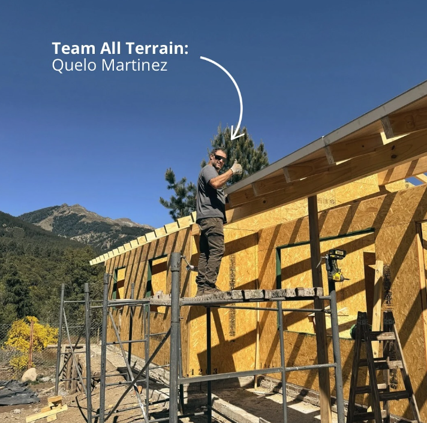
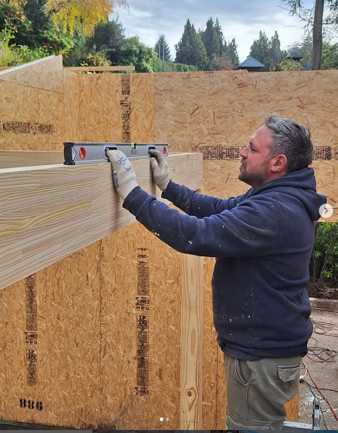

contacto
👋🏻 Soy Ezequiel Martinez, me dicen Quelo y le voy a contar sobre mi rol en All Terrain:
👉🏻 Experto en: Riego por aspersión, construcción en seco y tratamiento de aguas industriales y piscinas.
👉🏻 Años de experiencia: Más de 25 años 😮💨
👉🏻 Lo que me apasiona: Es la previa de cada proyecto, hacer el prototipado y planificar en función del resultado.
👉🏻 Lo que más disfruto de cada trabajo: Trabajar en equipo 🤜🏻🤛🏻
👉🏻 Una frase que nunca puede faltar: Las grandes obras comienzan con pequeños detalles 😉

💡Soy Ubi, no soy solo una cara bonita… También soy atención al cliente, compras, producción y mano de obra. Porque cuando emprendés, te toca hacer de todo 😎
En All Terrain, hay trabajo en equipo! Instalamos paneles sip, electricidad y riego, siempre listos para cualquier desafío.
